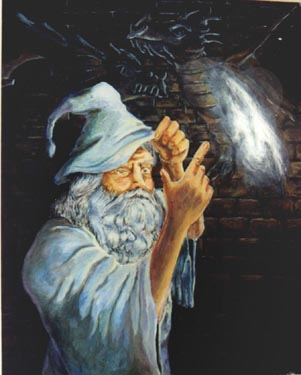
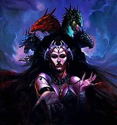

Deities
Deities in the Dragon Lance fall into one of three general categories. Good, Neutral, and Evil. Fairly simple and self explanatory. The deities on this page are not the only ones in this series. If I was to list and give a brief summary of all dieties in the Dragon Lance pantheon this would take much more time and space. So what I have done is list the major playing deities in the Chronicles series. Just as a warning spoilers may be ahead so for those who are interested in getting into the series you have been warned.
Good
Paladine
Leader of the good deities in Dragon Lance. Is revered and worshipped by the Knights of Solamnia. Holds dominion over concepts such as Charity, Redemption, Law, Light, and Leadership. Is the elder brother to both Gilean and Takhisis. Patron deity of Order of the Rose. Colors are silver and white. Is father of Habbakuk, Kiri-Jolith, and Solinari all of which are minor deities of good. Constellation is known as the Platinum Dragon. Has the ability to turn into a human avatar and is best known as Fizban. And oddly enough close friend of Tasselhoff Burrfoot
Mishakal

Mishakal is known as the Blue Lady, Lightbringer, and the Healing Hand. Is the goddess of restoration. Mother to Habbakuk, Kiri-Jolith, and Solinari. She is the patron mother of motherhood, healing, and restoring the lost. Actively tries to rid the world of evil with her compassion. Mishakal is known for restoring the knowledge of the True gods during the War of the Lance (Chronicles). Constellation is the Infinity symbol. Beloved by every god of good and the gods of Neutrality hold her in high regard.
Neutral
Gilean
Known as the Book, Sage, and Grey Wanderer. Gilean represents the godly force of knowledge. Patron of sages, librarians, and scholars. Leader of the gods of Balance. Equal in power to both Takhisis and Paladine. Supports free will and choice on all living beings on Krynn. Constellation is the Book of Souls. Believed to be the human scholar Astinius. Holder of the Tobril which is the divine plan of the High God for the world of Krynn.
Evil
Takhisis
The Queen of Darkness, the Dark Warrior, The Dragon of Many Colors and None, the Temptress. Takhisis is the god of control. Orders souls to submit and give way to those who are stronger. Believe it is her right to one day control all. Controls the Chromatic dragons and uses them for conquest. Youngest of the three siblings. Her constellation is the five headed dragon. When taking form she typically represents a five headed dragon each head representing a Chromatic dragon.